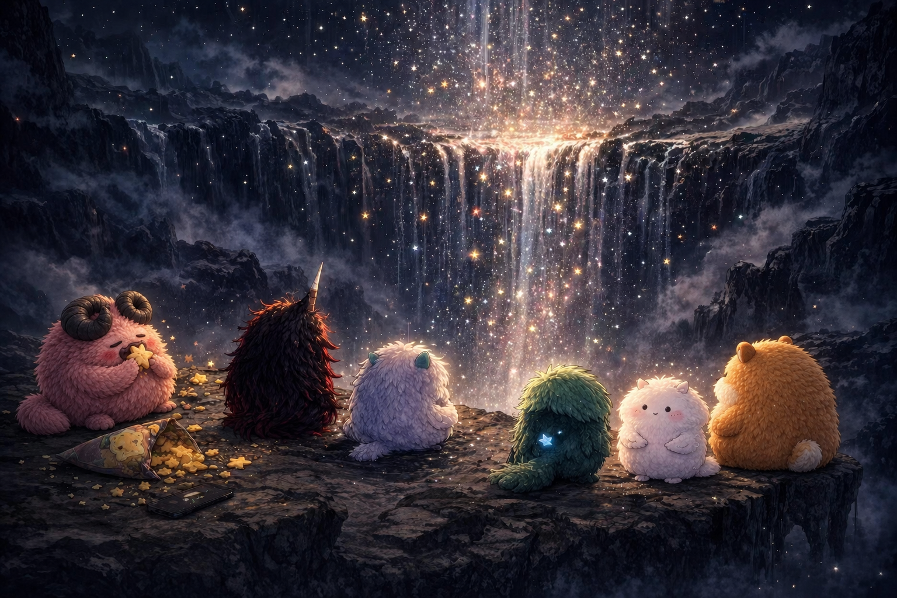
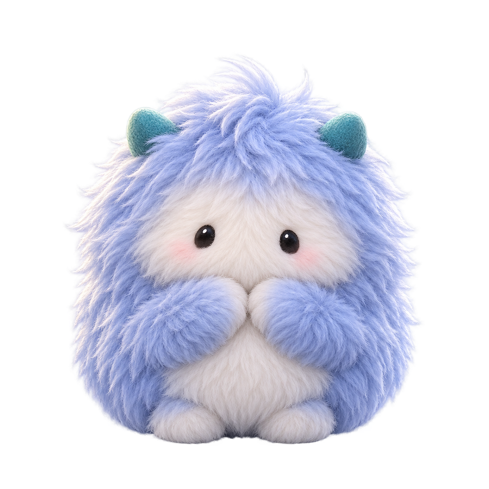
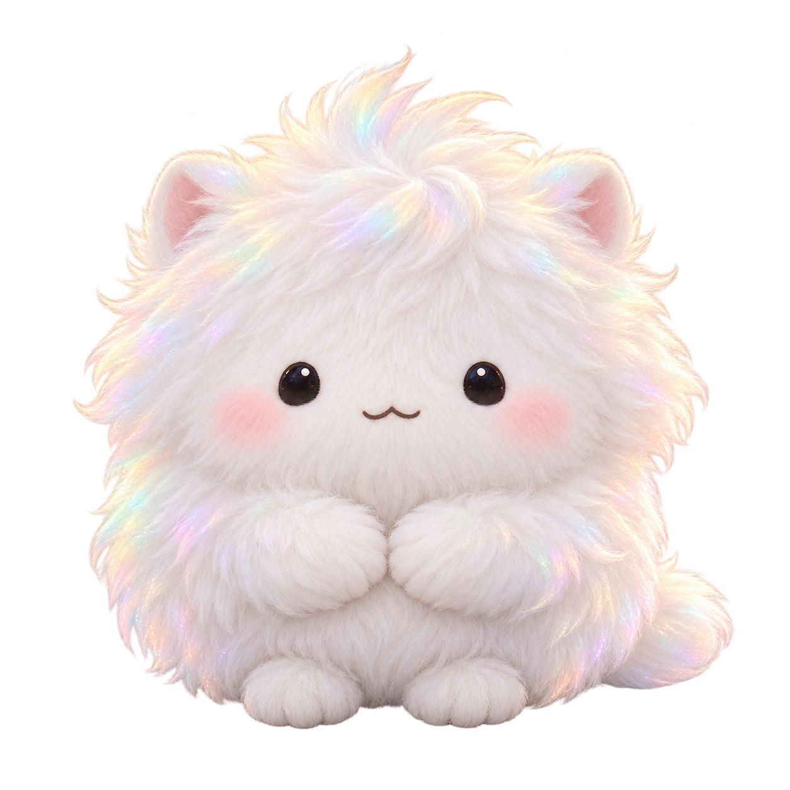

01.
Global content
& marketing
Bilingual storytelling built for audiences moving between China and the United States.
Media strategist, community builder, and story-world maker. I connect Chinese and American audiences through culture, play, and ideas people can feel.

I move between research, content, live experiences, and original IP — turning loose ideas into clear stories and things people can actually experience.
Bilingual storytelling built for audiences moving between China and the United States.
Events, esports, and cultural programming designed around participation—not passive reach.
Characters and tools that make emotion visible, memorable, and useful.
Student-facing marketing, content, and outreach for Berkeley Art Museum and Pacific Film Archive.
Survey-led audience research translated into clearer positioning and landing-page decisions.
Hands-on tournament operations spanning player experience, production flow, partners, and the energy in the room.
A character world born from memory, loss, humor, and the stubborn choice to keep imagining.

The round center of the world—curious, hungry, contradictory, and unmistakably me.
BertaA little comfort, a little mischief, and always a star-shaped snack to share.
The temper. Fast, protective, and sometimes louder than the problem.

LoniThe fragile part that notices everything and pretends not to.
The swagger. Big entrance, bigger opinions, secretly trying very hard.

FaelenThe quiet companion who stays beside you when words stop working.
“Remember the past.
Keep going.
Imagine what’s next.”
Stimease can live as short stories, animation, clothing, objects, and eventually a creative tool where other people give shape to their own inner worlds.
It starts with my story, but it is built to hold more than one person.
I’m Harry, a bilingual Chinese–American creator interested in how culture travels—through a campaign, a game, a room full of people, or one strange little monster.
I’m open to roles, collaborations, and conversations across media, marketing, gaming, and China–U.S. projects.